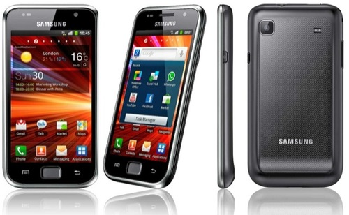
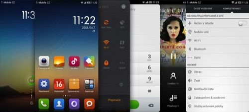

После двух лет использования SGS на стоковой прошивке, я захотел чего-то нового от телефона.

Гоняться за новинками телефоностроения у меня нет желания, фапать и тилибонькать на SGS4 или новый HTC я не вижу смысла.
Поэтому я поступил хитро: поставил лаунчером MiHome и успокоился. Красиво, няшно, плавненько. Все, что надо.
Чуть позже я узнал, что MiHome создан той же конторой, которая разрабатывает оболочку MIUI.
Посмотрев на красоту, которая есть в MIUI, задался я вопросом: «А не поставить ли мне на старичка какой-нибуть MIUI или Cyanogenmod, чтобы и андроид был не 2.3, а четверка, да и ощущение новья поиметь?»
Поставленная задача ясна, начинаем подготовительные работы.
На 4pda.ru есть куча прошивок для Samsung GT-I9001, но я решил брать MIUI, чтобы поиметь
Итак, идем в тему «Samsung GT-I9001 Galaxy S Plus - Прошивка MIUI», читаем и опешиваем, как много всего надо знать, как странно собрана информация и сколько надо сделать.
Но, перекрестный анализ различных источников показал, что проблема всего-лишь в малом умении объяснять все «для тупых», которым надо взять и сделать, а не разбираться во всех хитросплетениях.
Также в моем случае также проблемой было то, что на 4pda не все ссылки на скачивание работали. В подобном случае надо попользоваться гуглом, яндексом и сначала найти все недостающие файлы.
В случае, если у вас стоковая прошивка без clockworkmod (т.е. телефон, как он есть от рождения), нам потребуется скачать:
Для установки MIUI нужно скачать саму прошивку (искать последнюю в теме на 4pda) или посмотреть мой список подходящих прошивок.
Также нужно скачать файл сервисов от Google, если вам необходимы маркет, контакты, почта и прочие сервисы от Google на телефоне.
Если вы знаете, зачем это вам надо, скачайте с той же темы на 4pda нужное ядро с увеличенным размером оперативки для телефона. Если вы не знаете, зачем вам это — не качайте.
Итак, эти два или три файла (MIUI, Gapps и ядро) заливаем на телефон на внешнюю карточку.
Если у вас прошивка уже с clockworkmod — пропускаем этот этап
AriesVE.rar, получаем файл
AriesVE.ops
Multi_Downloader_v4.43_with_smd0425.exeAriesVE.ops
recovery_clockwork_5.5.0.4_ariesve.tar. Его не надо
распаковывать, прямо так и выбираем.
Поздравляю, вы установили CWM на свой телефон. Выключите телефон.
Зажимаем кнопку «Громкость Вверх» и «Включение». Телефон войдет в режим recovery.
Выбираем «backup and restore» → «backup to external sdcard». Бэкап будет сделан на внешнюю карточку и вам всегда можно будет откатиться назад.
Можете посмотреть видео, как это делается.
Если у вас все время грузится recovery режим — отставьте панику.
AriesVE.rar,
получаем файл AriesVE.ops
Multi_Downloader_v4.43_with_smd0425.exeAriesVE.ops
Boot_loader.tar. Его не надо распаковывать, прямо так и
выбираем.
Решение найдено на 4pda, испробовано и работает.
Как говорят, последние два пункта нужны, чтобы уменьшить количество лагов багов. Я изначально этого не сделал, в процессе эксплуатации у меня завис плеер и отказывалас работать фотокамера. После очистки таких проблем не наблюдалось.
Вуаля. У вас Andriod 4 и няшный MIUI на старичке GT-I9001.

Лично у меня при первом запуске устройства не удалось подключиться к аккаунту Google. Я пропустил этот шаг и позже настроил аккаунт через «Настройки» → «Аккаунты». Проблем не возникло.
Также один раз телефон подвис при проигрывании музыки, но сброс настроек и чистка кеша (при установке я не делал этого) помогли. Сейчас все работает отлично.
Камера не фотографировала, сообщая «Не хватает памяти». Вышеупомянутая чистка сделала свое грязное дело и камера заработала.
BeyondPod также выводит кнопки управления на локсрин — это чудесно.
Интерфейс работает плавно, проблем не найдено.
SetCPU встал, профили заработали.
PS: CyanogenMod 10.x (OS 4.x) ставится аналогичным образом.